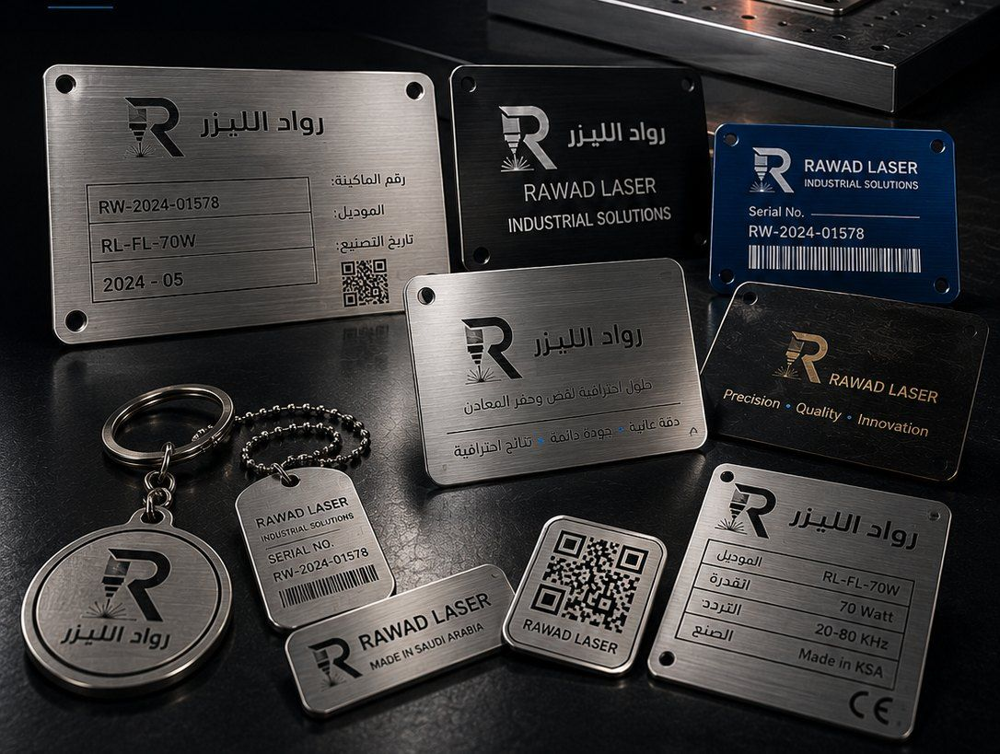
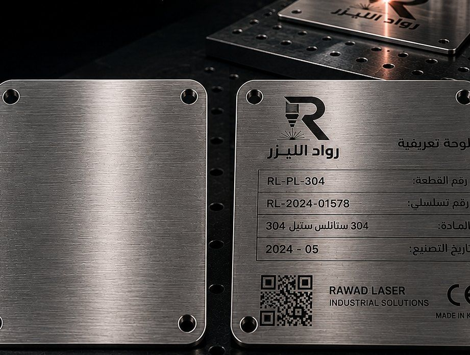
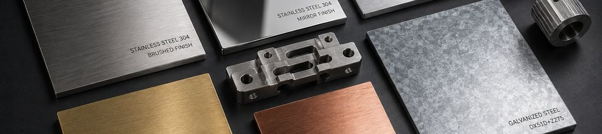
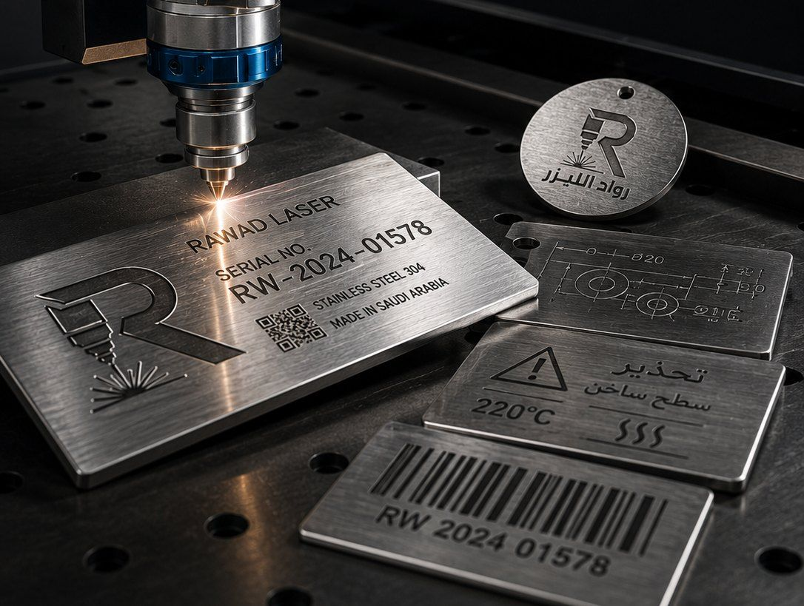

Fiber Laser Marking is one of the most advanced laser marking technologies, used to create permanent, high-precision marks on all kinds of metal with no inks, chemicals, or added materials. This guide explains how it works, where it is used, and how to prepare your file for the best result — and at the end you will find the full service file as a PDF.
What is fiber laser marking?
It is laser marking that acts on the metal surface itself: a focused laser beam alters the surface to produce a clear, high-contrast mark. Because the mark is part of the metal rather than a layer on top of it, it does not fade over time and resists repeated use, abrasion, heat, and harsh environments — which makes it ideal for industrial and commercial applications that demand long-term reliability.
Three different results, depending on the settings
Every metal needs different settings (power, speed, frequency), and we tune them to the material and the result required:
- High-contrast black marking — a fine oxide layer that gives strong clarity on stainless steel, ideal for data plates and QR codes.
- Deep engraving — removing a layer of metal to create real depth, suited to parts exposed to heavy abrasion.
- Light surface marking — a subtle, elegant mark used on gifts and personalized products.

A stainless data plate: high contrast and clean edges that stay readable for years.
Why fiber marking instead of the alternatives?
- Versus stickers and labels: a label peels or fades with sun and solvents; a laser mark stays.
- Versus printing and inks: ink wears off with abrasion or cleaning; laser marking is unaffected by chemicals.
- Versus mechanical engraving: the laser does not touch the part, so there is no vibration or distortion, and it reaches far finer detail.
- Versus hand stamping: a perfectly consistent result across hundreds of parts, with variable numbering per part.
The metals we mark
Stainless steel, aluminum, brass, copper, titanium, carbon steel, coated metals, and more. Each behaves differently under the laser: stainless steel gives the best black contrast, aluminum gives a clear light mark, and brass and copper need finer tuning to handle reflectivity.

Where is fiber marking used? Eight practical applications
- Logo marking: your company logo on products, gifts, and tools with a professional look.
- Serial numbers: a unique serial on each part for production and inventory tracking.
- QR codes: engraved codes that scan cleanly and survive daily use.
- Barcodes: permanent industrial barcodes on parts and production lines.
- Data plates: nameplates carrying model, specifications, and manufacturing date.
- Industrial marking: warning labels and operating instructions on equipment and machinery.
- Personalization: names, phrases, and custom designs on gifts and products.
- Marking metal parts: engraving spare parts, tools, and precision industrial components.

Serial numbering, barcodes, and warning marks — all permanently engraved.
How to prepare your file for the best result
- Send a vector file if you can (AI, EPS, SVG, PDF, or DXF) — vectors give sharp edges at any size.
- If no vector is available, send a high-resolution PNG on a transparent or clean white background, and we will redraw the logo if needed.
- Avoid gradients and shadows — the laser produces a single mark, and a one-color design gives the cleanest result.
- Watch out for very thin lines and small text; we review them with you and may suggest a slight size increase if they are borderline.
- For QR codes: a larger size with less data density scans more easily — send us the link and we will set the right size.
- Specify the mark size and its position on the part, plus the metal type and finish (polished, brushed, coated).
How to order the service
- Send the design — the logo, file, or a clear photo via WhatsApp, with the part type, metal, and quantity.
- Sample and quote — we send a preview of the result, a clear price, and a set delivery date, with no obligation.
- Setup and marking — we tune the laser to the metal and usually start within 6 hours of approval.
- Check and deliver — we review clarity, contrast, and dimensions before delivering on the agreed date.
And we are set up for batches: 25, 50 or more plates produced with the same precision as the first, with serial numbering from Excel.
Download the full service file (PDF)
A six-page file covering the service and its advantages, the eight use cases, the metals we mark, and a sample gallery:

Ruwwad Laser — Fiber Laser Marking 2026
About the service, use cases, materials, and sample gallery.
Ready to mark your parts?
Send us your design or file on WhatsApp and we will send back a sample and a quote. You can also visit the fiber marking service page for more samples and detail.
Laser engraving service page · Metal cutting & fabrication · Contact us
Get a free quote in no time.
Get a Quote